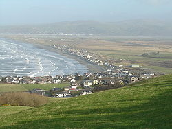

Borth
Coordinates: 52°29′07″N 4°03′04″W / 52.48533°N 4.05103°W
| Borth | |
| Welsh: Y Borth | |
|  Borth with Cors Fochno, the River Dyfi estuary and Aberdyfi in the background |
|
|
|
|
| OS grid reference | SN608894 |
|---|---|
| Principal area | Ceredigion |
| Ceremonial county | Dyfed |
| Country | Wales |
| Sovereign state | United Kingdom |
| Post town | Borth |
| Postcode district | SY24 |
| Police | Dyfed-Powys |
| Fire | Mid and West Wales |
| Ambulance | Welsh |
| EU Parliament | Wales |
| UK Parliament | Ceredigion |
| List of places: UK • Wales • Ceredigion | |
{kind=link}
{kind=link}
Borth (Welsh: Y Borth, (literally English: The Port)) is a coastal village 7 miles north of Aberystwyth in the county of Ceredigion, Mid Wales. The population was 1523 in 2001.[1]
Contents |
Features and history
Borth has a sandy beach and is a popular holiday seaside resort. There is a youth hostel in the village and caravan and camping sites nearby.
An ancient submerged forest is visible at low tide along the beach, where stumps of oak, pine, birch, willow and hazel (preserved by the acid anaerobic conditions in the peat) can be seen. Radiocarbon dating suggests these trees died about 1500 BC. [2] This submerged forest[3] is also associated with the legend of Cantre'r Gwaelod. [4] [5]
Cors Fochno, a raised peat mire, part of the only UNESCO Biosphere reserve in Wales is located next to the village together with the Dyfi National Nature Reserve and visitors centre at Ynyslas. The long distance footpath the Dyfi Valley Way passes through the village.
On 4 April 1876 the entire Uppingham School in Rutland, England, consisting of 300 boys, 30 masters and their families, moved to Borth for a period of 14 months, taking over the disused Cambrian Hotel and a large number of boarding houses, to avoid a typhoid epidemic.[6]
The town's main line railway station is served by the Cambrian Line.
Borth is also the location of the Borth Animalarium and Borth & Ynyslas Golf Club.
According to Morrissey, his hit single "Everyday Is Like Sunday" was inspired by Borth.[7]
In 2008 and 2009 Borth hosted The Square Festival.
Welsh language
According to both the 1991 and 2001 censuses, 43% of the residents of Borth are Welsh-speakers.
Notable residents
- Lindsay Ashford, crime novelist and journalist
- Mark Williams, Member of Parliament for the Ceredigion constituency
Image gallery
-
Submerged forest remains, March 2008
-
Submerged forest remains, details, March 2008
-
Borth sunset, November 2006
-
Borth Beach in the summer of 2007
-
Submerged forest at sunset on Borth sands near Ynyslas
-
Petrified tree stump on Borth sands near Ynyslas
{kind=link}
{kind=link}
{kind=link}
{kind=link}
{kind=link}
{kind=link}
References
- ^ Office for National Statistics : Census 2001 : Parish Headcounts : Ceredigion
- ^ BBC News
- ^ BBC Programme clip about the Submerged Forest
- ^ "Coast - Submerged Forest". BBC. http://www.bbc.co.uk/wales/mid/sites/coast/pages/5.shtml. Retrieved 2008-03-06.
- ^ Video BBC Video: Programme clip about Cantre'r Gwaelod
- ^ http://www.gutenberg.org/files/18036/18036.txt Uppingham by the Sea, a Narrative of the Year at Borth, Author: John Henry Skrine, Release Date 22 March 2006 from Project Gutenberg
- ^ Q Magazine, July 2006
External links
- Details for Borth, Ynyslas and Clarach
- BRH Rail service details
- Borth Animalarium
- Surfing, Windsurfing and other coastal sports in Borth
- Borth Rowing Club
- www.geograph.co.uk : photos of Borth and surrounding area
| Wikimedia Commons has media related to: Borth |
{kind=link}